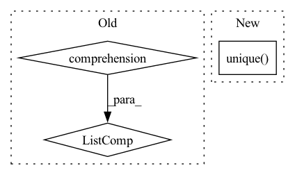

Pattern ID :12417
Before Change
self.evict_backlist.clear()
// new ids chunk_offset + offset_in_chunk
with record_function("(zhg) embed idx -> cache chunk id"):
mapped_ids = torch.tensor([self._id_to_cached_cuda_id(id) for id in ids.view(-1)] ,
device=ids.device,
dtype=ids.dtype).view(ids.shape)
After Change
// unique(IMT(ids)) -> chunk ids
// self.IMT_Embedding(ids)
chunk_id_set = torch.unique( self.IMP_chunkid_Embedding(ids))
chunk_id_set = set(chunk_id_set.cpu().numpy())
assert len(chunk_id_set) <= self.cuda_chunk_num, \
f"the input indices pull {len(chunk_id_set)} chunks, " \In pattern: SUPERPATTERN
Frequency: 5
Non-data size: 3
Instances Fragment ID: 42230228
Project Name: hpcaitech/freqcacheembedding
Commit Name: 5062f1cff105e81702e90439e652d412e4950718
Time: 2022-07-25
Author: fangjiarui123@gmail.com
File Name: recsys/modules/embeddings/chunk_param_mgr.py
M Class Name: ChunkParamMgr
N Class Name: ChunkParamMgr
M Method Name: prepare_ids(2)
N Method Name: prepare_ids(2)
M Parent Class: object
N Parent Class: object
M File Name: recsys/modules/embeddings/chunk_param_mgr.py
N File Name: recsys/modules/embeddings/chunk_param_mgr.py
M Start Line: 126
M End Line: 165
N Start Line: 152
N End Line: 189
Before Change
returns nT, nCorrect, tx, ty, tw, th, tconf, tcls
nB = len(target) // number of images in batch
nT = [len(x) for x in target]
txy = torch.zeros(nB, nA, nG, nG, 2) // batch size, anchors, grid size
twh = torch.zeros(nB, nA, nG, nG, 2)
tconf = torch.ByteTensor(nB, nA, nG, nG).fill_(0)
tcls = torch.ByteTensor(nB, nA, nG, nG, nC).fill_(0) // nC = number of classesAfter Change
// Unique anchor selection
u = torch.stack((gi, gj, a), 0)[:, iou_order]
// _, first_unique = np.unique(u, axis=1, return_index=True) // first unique indices
first_unique = return_torch_unique_index(u, torch.unique( u, dim=1) ) // torch alternative
i = iou_order[first_unique]
// best anchor must share significant commonality (iou) with target Fragment ID: 42230224
Project Name: nightsnack/yolobile
Commit Name: 545f756090e142412e40589c8c30ad58baade744
Time: 2019-02-28
Author: glenn.jocher@ultralytics.com
File Name: utils/utils.py
M Class Name: AnonimousClass
N Class Name: AnonimousClass
M Method Name: build_targets(5)
N Method Name: build_targets(5)
M Parent Class:
N Parent Class:
M File Name: utils/utils.py
N File Name: utils/utils.py
M Start Line: 239
M End Line: 272
N Start Line: 246
N End Line: 272
Before Change
inverse_triples = np.stack(
[
triples[:, 2],
np.array([relation_to_inverse[relation] for relation in relations] , dtype=np.str),
triples[:, 0],
],
axis=-1,After Change
// We re-create them pure index based to ensure that _all_ inverse triples are present and that they are
// contained if and only if create_inverse_triples is True.
if filter_out_candidate_inverse_relations:
unique_relations, inverse = np.unique( triples[:, 1], return_inverse=True)
suspected_to_be_inverse_relations = {r for r in unique_relations if r.endswith(INVERSE_SUFFIX)}
if len(suspected_to_be_inverse_relations) > 0:
logger.warning(
f"Some triples already have the inverse relation suffix {INVERSE_SUFFIX}. " Fragment ID: 42230227
Project Name: pykeen/pykeen
Commit Name: a007a273ff146107fd1b0c099d561c7b7279965a
Time: 2020-12-10
Author: berrendorf@dbs.ifi.lmu.de
File Name: src/pykeen/triples/triples_factory.py
M Class Name: TriplesFactory
N Class Name: TriplesFactory
M Method Name: from_labeled_triples(7)
N Method Name: from_labeled_triples(6)
M Parent Class:
N Parent Class:
M File Name: src/pykeen/triples/triples_factory.py
N File Name: src/pykeen/triples/triples_factory.py
M Start Line: 169
M End Line: 222
N Start Line: 269
N End Line: 319
Before Change
if full:
return self.scenarios_df
else:
summary_columns=[i for i in self.scenarios_df.columns.tolist() if len(self.scenarios_df[[i]].unique().tolist()) > 1]
return self.scenarios_df[summary_columns]
def run(self):
log("Starting Image Classification Model Comparison Pipeline.")After Change
df=copy.deepcopy(self.scenarios_df)
df=df.drop("parameters", axis=1)
for col in df.columns:
if len(df[col].unique() ) > 1:
summary_columns.append(col)
return self.scenarios_df[summary_columns]
Fragment ID: 42230223
Project Name: radtorch/radtorch
Commit Name: c74d61361b398f40474842c49c8b55f3af428dde
Time: 2020-04-14
Author: elbanan@users.noreply.github.com
File Name: radtorch/pipeline.py
M Class Name: Compare_Image_Classifiers
N Class Name: Compare_Image_Classifiers
M Method Name: grid(2)
N Method Name: grid(2)
M Parent Class:
N Parent Class:
M File Name: radtorch/pipeline.py
N File Name: radtorch/pipeline.py
M Start Line: 115
M End Line: 115
N Start Line: 115
N End Line: 121